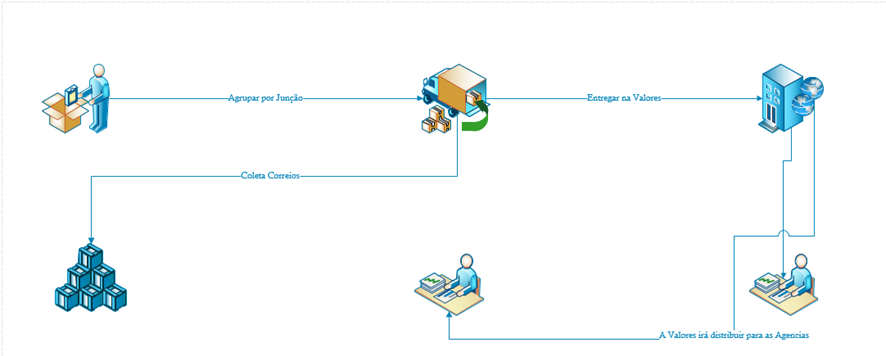

Importante gerar a lista e mídia de postagem na máquina da expedição, acessando:
Controlelog → Expedição Correio → Lendo o Movimento da OS, e entregar para o acabamento.

Solicitar a emissão da NFE e passar para o acabamento gerar as etiquetas.

Conferir as caixas e etiquetas no sistema:
Controlelog → Pré Pós Expedição → Conferência.
Quando for carregar o carro, enviar o arquivo e imprimir 2 listagens de postagem.
Conferir as quantidades de caixas e pedir para o motorista assinar uma via.
Abaixo, demonstrativo de uma lista: